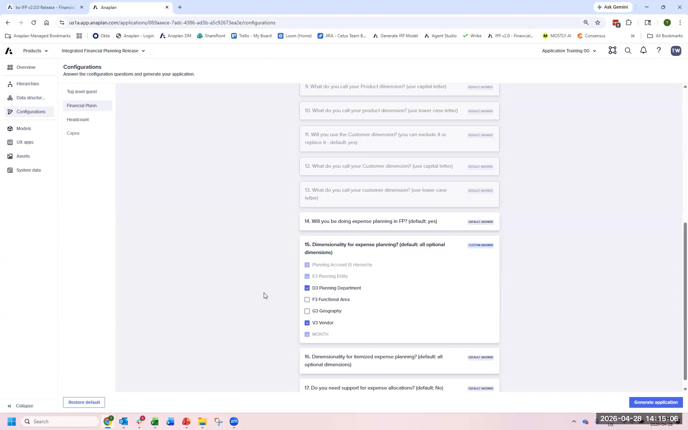
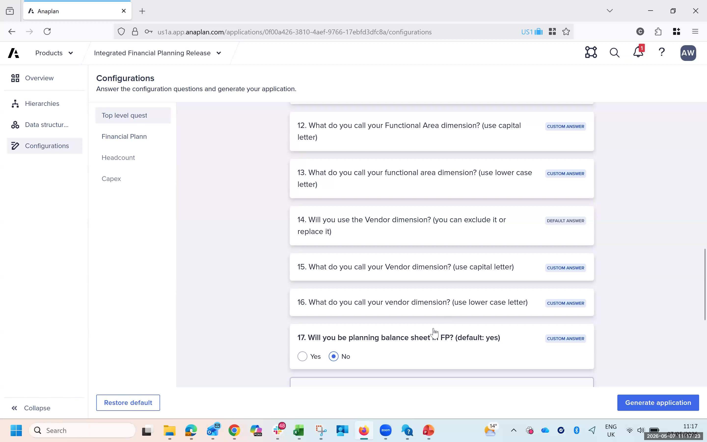
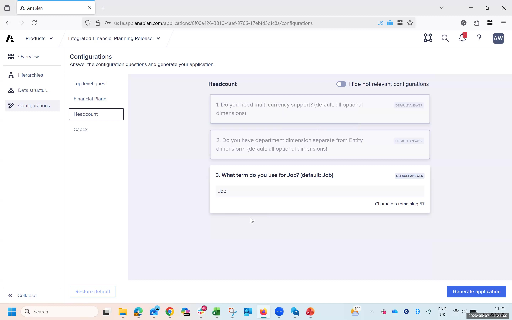

Lab A: Configurator Exercise
Configure the IFP App Framework for FintechCo — a real decision exercise
Lab Format
This is a decision exercise. You will make real configuration choices for FintechCo using the App Framework configurator. There is no step-by-step answer guide on this page — configuration decisions require judgment, and this lab is about making those calls.
The facilitator will walk through a reference configuration during the debrief. Focus on making defensible decisions and documenting your reasoning.
Work in the model your facilitator specifies at session start. The model name will be in the format IFPv2.0.0-train-base-financial-planning or similar. Do not work in the shared demo model.
FintechCo Profile — Quick Reference
Organization
- Industry: Financial Services
- Entities: 3 legal entities (UK, EU, US)
- Entity Hierarchy: 3 levels (Group → Region → Entity)
- Employees: ~1,200
Planning Scope
- Functional Areas: Gross Profit, OpEx, Headcount, Balance Sheet
- Departments: 5 (Sales, Technology, Operations, Finance, HR)
- Geography: 2 levels (Region → Country)
- Currencies: GBP functional, USD + EUR transactional
Time Settings
- Fiscal Year: January – December
- Granularity: Monthly
- Planning Horizon: 24 months forward
Planning Methods Needed
- Direct Input (with 2 adjustment layers) — Day 2 Lab B
- Headcount × Rate — Day 2 Lab C
- Units × Rate (base method)
- Rolling Moving Average
Mini-Labs
Complete each mini-lab in order. The mini-labs mirror the configurator's section structure.
- 1Open the App Framework from your Anaplan workspace.
- 2Navigate to Configurator → Hierarchies.
- 3Set Entity Levels → 3. Enter level names: Group, Region, Entity.
- 4Set Geography Levels → 2. Enter level names: Region, Country.
- 5Enable Functional Areas: check Gross Profit, OpEx, Headcount, Balance Sheet.
- 6Set Product Hierarchy → Not in scope (FintechCo does not plan at product level).
- 7Click Save on the Hierarchies section.
These hierarchy decisions cannot be changed after generation without a full regeneration. Confirm entity and geography levels with your facilitator before proceeding.

- 1Navigate to Configurator → Data Structure.
- 2Set Fiscal Year Start → January.
- 3Set Planning Granularity → Monthly.
- 4Set Planning Horizon → 24 months.
- 5Set Functional Currency → GBP.
- 6Add Transactional Currencies: USD, EUR.
- 7Click Save.

- 1Navigate to Configurator → Financial Planning.
- 2Under OpEx Planning Methods, enable: Direct Input, Units × Rate, Rolling Moving Average.
- 3Note: You will add the Headcount × Rate method as an extension in Day 2 — do NOT try to configure it here.
- 4Set Balance Sheet → Enabled. Include all standard balance sheet accounts.
- 5Set Revenue Planning → Driver-based (Volume × Price).
- 6Review the remaining financial planning questions. Accept defaults where FintechCo has no special requirements.
- 7Click Save.
Only enable planning methods you actually need. Each enabled method generates additional line items in the INP OPX modules. Unused methods add calculation overhead with no benefit.
- 1Navigate to Configurator → Headcount.
- 2Set Headcount Dimensions: Department is the primary planning dimension.
- 3Set Default Headcount Planning Method → Direct Entry.
- 4Enable HC Model Integration → Yes (FintechCo uses the Headcount Planning 2.0 model).
- 5Accept remaining headcount defaults.
- 6Click Save.

- 1Navigate to Configurator → Review (or the summary page).
- 2Verify the configuration summary: 22 top-level questions answered, all required financial planning configurations set.
- 3Confirm total configuration count shows 43 (or close to 43 based on your scope selections).
- 4Check: No required questions show as unanswered or in error state.
- 5Click Generate (or Apply & Generate).
- 6Note the time you triggered generation — the facilitator will track elapsed time.
- 7Monitor the status indicator. It will show: Generating → Generated with Errors (or Generated Successfully).
- 8While waiting, review your configuration decisions — be ready to discuss them in the debrief.
Generation typically takes 10–20 minutes. In training environments with multiple simultaneous generations, it may take longer. Use this time to review your configuration decisions and prepare debrief questions.

Debrief Questions
- What was the hardest configuration decision you made? What additional client information would have made it easier?
- Which configuration decisions could you not change after generation without a full regeneration?
- FintechCo asked mid-session that they also need product-level planning for their UK entity. How does that change the configuration? When would you need to have known this?
- What would happen if FintechCo later acquired a fourth legal entity in Asia? What changes?
- If you were running this Session Zero with a real client, what three questions would you ask first?
When the group reconvenes, the facilitator will walk through the reference configuration and discuss the key decision points. Compare your answers — differences are expected and worth discussing.